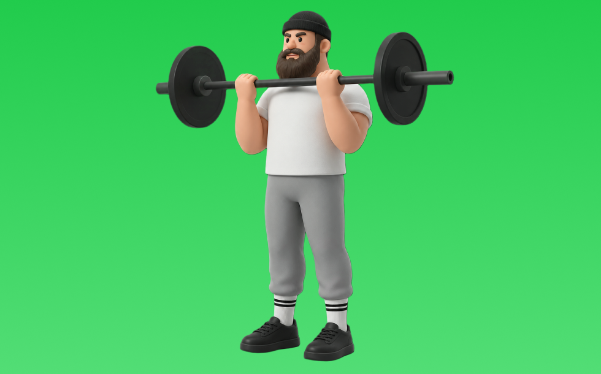

バーベルカール

バーベルカールとは、バーベルを使って「膝を曲げる」動作で腕（上腕二頭筋）、前腕を鍛える種目です。高重量を扱いやすく、筋力を伸ばしやすいのが特徴で、かかとを引き寄せて収縮し、ゆっくり戻す動作を繰り返します。腕の太さづくりや引く力の補強が期待できます。
- 対象部位
- 腕
- 器具
- バーベル
- 記録形式
- 重量・回数
- 別名
- EZカール / bb curl
YouTube動画
-
『バーベルカールを劇的に効かす』5つのポイントを徹底解説
-
【二頭筋】バーベルカール/プロと素人のフォームの違い３選！ボディビル日本王者が徹底解説。
-
【4分で筋トレ解説】ボディビル世界チャンプが教える正しいバーベルカール！トレーニング初心者必見！
-
ジュラシック木澤が教える！バーベルカールのやり方完全解説！
-
【二頭筋】このバーベルカールはもったいないので今すぐやめてください。【教えてジュラシック】
-
【筋トレ】太い力こぶをつくるバーベルアームカールのやり方解説！【上腕二頭筋】
-
【上腕二頭筋トレ】バーベルアームカール(EZバー)の正しいフォーム・やり方をご紹介 | 「腕を太くしたい」「力こぶが欲しい」方はぜひ！
-
バーベルカールの正しいやり方｜腕に効かせる3つのポイント
-
【腕トレ】世界二連覇、寺島遼式！“二頭筋が激変する”バーベルカール徹底解説。
-
【バーベルカールの本質】二頭筋に効かせるコツを伝授してもらいました。【五味原 領】
-
バーベルカールのやり方【上腕二頭筋】
-
【それNGです】ダンベル・バーベルカール：５つのエラー動作と改善方法【筋トレ】
YouTubeショート
-
このアームカールはやめろ！#shorts
-
バーベルカールを劇的に効かすたった1つのコツ
-
本当に正しいアームカールのやり方
-
【効きやすい方でいいです】#筋トレ #パーソナルジム #アームカール #EZバー
-
バーベルカール3セットだけで腕をパンパンにする3つのコツ
-
【筋トレ初心者必見 | バーベルカールのやり方】日本人初ミスター・オリンピアに出場した山岸プロが解説！(how to barbell curl) #山岸秀匡 #筋トレ初心者 #バーベルカール
-
ezバーカール、手幅で効く場所が変わる #GronG #グロング #筋トレ #フィットネス #EZバー #腕トレ #アームカール
-
みなさんはEZバーアームカールやってますか？持田選手（おかずもち）がしっかり上腕二頭筋に効くトレーニングをレクチャーしてくれました！#筋トレ #volix #腕トレ #ちょこっと惜しい #上腕二頭筋
-
正しいアブローラー3つのポイント #筋トレ
-
正しいラットプルダウン4つのポイント【筋トレ】
-
背中が成長しないラットプルダウン
-
みなさんはハンマーカールやってますか？持田選手とコロチキの西野創人さんが上腕二頭筋に効くトレーニングをレクチャーしてくれました！#筋トレ #volix #上腕二頭筋 #ちょこっとおしい #腕トレ
-
世界最大のダンベルがヤバすぎる【世界の筋肉】
-
正しいルーマニアンデッドリフト4つのポイント #筋トレ
-
腕のやり方🔥〜ケーブルプレスダウン基礎編〜 #筋トレ #筋肉 #筋肉社長 #腕トレ
-
【ダンベル】胸全部鍛えるトレーニング４選 #筋トレ
-
【ショート動画】上腕二頭筋はほとんど低重量でやってます！ #筋トレ #筋肉 #ホームトレーニー #ホームトレーニング #腕トレ
-
【ダンベル】背中トレ4選 #筋トレ
-
極太の二頭筋を作りたい人必見
-
正しい腕立て伏せ3つのポイント #筋トレ
-
上腕二頭筋を追い込む！EZバー･プリチャーカール【糸井トレーナー】
-
正しいデッドリフト4つのポイント#筋トレ #デッドリフト
-
自己ベスト80kgなるか、、、？ #Shorts #筋トレ女子 #ベンチプレス
-
今すぐ辞めて⚠️脚が太くなるブルガリアンスクワット
-
【ベンチプレス100kgあげる河野玄斗】 #shorts #河野玄斗 #study #筋トレ
-
【ダンベル】肩トレ3選 #筋トレ
-
胸トレのやり方🔥〜ダンベルプレス基礎編〜 #筋トレ #筋肉 #筋肉社長 #胸トレ
-
5kgのダンベルで自宅で5分！バキバキの前腕を作る筋トレ！#shorts #筋トレ #fitness
-
持田選手に上腕二頭筋を極太にするプリーチャーカールについてレクチャーしていてもらいました！次はどの種目の解説をやってほしいかコメントしてね！#筋トレ #volix #トレーニング #腕トレ
-
背中トレのやり方🔥〜ダンベルワンハンドロー基礎編〜 #筋トレ #マッチョ #筋肉社長 #背中トレ
-
腰上げベンチ160kg
-
サイドレイズはここを気をつけると全然肩が変わる！ #サイドレイズ #筋トレ #トレーニング
-
【これ、間違いです】肩すくみ腕引きワンハンドローイング
-
初心者向け🔰チェストプレスのワンポイントアドバイス！ #筋トレ
動作方法
- 肘の位置を固定して構える
- 肘を軸にして持ち上げる
- ゆっくり下ろして負荷を保つ
動作ポイント
- 肘を前後に振りすぎない
- 手首を反らしすぎない
ワンポイントアドバイス
- 肘の位置を固定すると狙った部位に効きやすい
- 回数を急がず、下ろし動作を丁寧に行う
目的別回数設定
目的や体力に応じた一般的な目安です。無理のない範囲で調整してください。
- 筋力アップ
- 1〜5回
- 筋肥大
- 6〜12回
- 持久力アップ
- 13〜20回
YouTube動画について
動画はYouTubeの公開情報をもとに表示しています。内容は投稿者によるもので、Biggrによる監修ではありません。
アプリを入手
筋トレやトレーニングの記録はBiggrにお任せください。今すぐ無料で使い始められます。